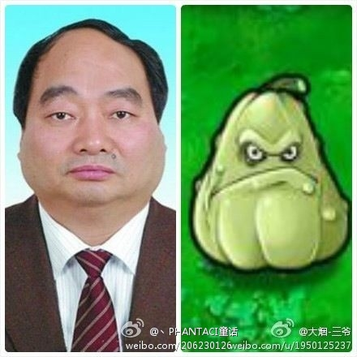

最近雷政富的淫荡视频走红，网友戏称为“雷八戒”、“雷冠希”、“雷政府”。此人无论是姓名还是相貌，都堪称天朝权贵的形象代言人。
下面分享几篇网上的评论文章。
（编程随想注：凤凰网的
（编程随想注：“一五一十部落”整个网站在2014年3月被真理部查封了，这篇文章的原始链接已经【失效】）
朱瑞峰：
#重庆官员不雅照曝光#
本博继续通过腾讯微博向大家爆料，
1 雷政富性爱视频是通过内部人士得到，但我要保护爆料人。
2 我手中还有五六段类似视频，男主角都是重庆方面厅级官员。其中，4高官还在位，其中1官员在薄熙来和王立军案后下台。
3 我将所有资料备份给可靠的人，如遇不测，以防万一。大家可帮转。
朱瑞峰：
#重庆官员不雅照曝光#
继续向大家爆料，大家猜猜看，那个女孩跟雷政富睡一次觉，能赚多少钱？告诉大家：300块。据那个工程公司的人讲，他们招聘女员工公关政府官员，女员工跟雷政富上床，公司内部叫加班，公司支付加班费300元。这是我了解的，应该属实。这是重庆一些工程公司抢工程的一般模式。
朱瑞峰：
【我与雷政富对话】继续爆料，大家听听我跟雷政富书记的对话。雷书记在电话里面跟我称兄道弟，我怎么成了贪官的兄弟。他说过年让我去重庆，然后把视频从网上撤下来，我不答应，雷书记找人威胁我。视频出来，他又说是假的。这些都是某些官员的一般嘴脸，应急过程的一般模式。
（雷政富与朱瑞峰对话录音 @ 腾讯视频）
十二秒的幸福
他用了12年爬到今天的位置；
他用了12个月给她买礼物帮她安排工作；
他用了12天养精蓄锐调养身息；
他用了12个小时安排好工作抽出时间开好房间静静等她；
他用了12分钟脱衣洗澡。
而这一切，只是为了和她在一起的12秒。
现在他都为了她被免职了，如果这都不是真爱，那还有真爱吗?
雷政富——书记的形象代言人
雷书记，简单醒目的三个字，旗帜鲜明的卡通面容，干净利落的动作，使他于2012年岁末，成为书记这个全球最有前途的职业，当之无愧的形象代言人，彰显“政+富”人生。
雷书记用夸张的手法、荒诞的对比尺度、大胆而不失传统的传教士风格，有力地证明了十八大优秀代表梁稳根书记关于“党员的女朋友比群众的女朋友漂亮”的伟大论断。
史记 雷政富列传
雷公政富者，重庆长寿人也，骨骼清奇，雷厉风行，人皆谓之雷公。
时官居北碚令，坊间有妖女一枚，年方二八，伤风败俗，众衙役皆束手无策。
雷公怒，欲只身伏魔。有里长以大碗斟酒壮行，却见雷公已扬鞭策马而去。
少顷，雷公回，众问战果，答曰：御之。时余酒尚温。
太史公曰：温酒御妖女，乃云长再世也。
一个吊丝献给富而不高不帅的雷书记
你的长相
超乎想像的意外
一打二B铅笔
也没能将你画下来
葫芦和瓢
都不足以形容你的脑袋
更别说那王八跟猪
合体的身材
得是怎样的交通意外
才能碰撞出如此的神采
造物弄人几千载
才能把你弄出来
多少次的错误
才能产生一个
这样的怪胎
不愿再想你的脸
恨只恨
不小心就看了一眼
从此
俺的世界里
多一个挥之不去的梦魇
政富 VS 冠希
人家那边要爆个艳照门多难啊，人帅，年轻，富二代，身体好，还是演艺圈明星；
咱们这边呢，长的像个猪头，年纪大，土鳖，谢顶，12秒完事。
这叫什么？一国两制！
这是社会主义优越性的充分体现！
向上吧，屌丝！
针对网上疯传的不雅视频，雷政富称视频是造假，并让记者不要管
（以下是网友调侃）
如果是假的，怎能“不要管”？应该管才对！找到作假者，绳之以法！
雷书记，你长得那么鬼斧神工，想PS难度是很大的！
请问您有双胞胎兄弟吗? 比如失散多年那种?
雷书记的对联
上联：一男二奶玩三Ｐ不顾四廉五耻六义竟七上八下用九种姿势十分大胆
下联：十官九贪有八淫不惜七哄六骗五拐想四出三入抓二基本点一插即射
横批：十二秒
先放一张雷书记的标准照：
下面是网友的各种恶搞：



俺博客上，和本文相关的帖子（需翻墙）：
《分析“制度性腐败”——为啥天朝的贪官屡禁不止？》
《每周转载：超级富豪王振华性侵9岁女童（大量网友评论，多图）》
《每周转载：米兔运动（MeToo）冲击佛门，佛协会长竟是淫僧（举报材料及网友评论）》
《每周转载：关于＜编译局言情录＞的电子书、网文、网友评论》
《每周转载：汇总未成年人被性侵被嫖宿的案件（38起，附图）》
下面分享几篇网上的评论文章。
★《雷政富反腐语录 @ 财新网》
2006年5月15日 时任职务：重庆市垫江县委书记
要应用保持共产党员先进性教育活动的成果，把坚定理想信念、加强道德修养、发扬党内民主、严明政治纪律、强化制约监督、加强制度建设变成我们的实际行动。“每一个党员、每一个干部，都应该有执政党的意识，按照党章的要求办事，坚持维护党的权威。”
摘自：《雷政富同志在全县党风廉政建设和反腐败斗争领导小组会议上的讲话》
----------------
2006年6月28日 时任职务：重庆市垫江县委书记
要认真实践社会主义荣辱观，始终牢记“两个务必”，深入贯彻“八个坚持、八个反对”，认真践行“八荣八耻”，加强道德修养，保持清正廉洁，恪守廉政承诺，带头廉洁自律。
摘自：《雷政富同志在全县庆祝中国共产党成立85周年暨保持共产党员先进性教育活动总结大会上的讲话》
----------------
2006年8月3日 时任职务：重庆市垫江县委书记
领导干部要牢固树立正确的政绩观，大力发扬艰苦创业、勤俭节约的优良作风，防止和克服官僚主义、主观主义、拜金主义、享乐主义。
要牢固树立正确的权力观、地位观和利益观，从政先修德，做官先做人，律人先律己，时时处处自重自省、自警自励，慎行慎独、慎始慎终，认真算好利益账、法纪账、良心账，自觉筑牢拒腐防变的道德防线。
摘自：《县委书记雷政富同志在县委十一届八次全会上的讲话》
----------------
2007年6月23日 时任职务：重庆市垫江县委书记
要坚定共产主义理想信念。有了这种信仰，才能正确对待个人名利，正确处理好个人利益和集体利益、局部利益和全局利益、当前利益和长远利益的关系，脚踏实地地带领广大人民群众朝着既定的目标奋勇前进。
摘自：《县委书记雷政富同志在县委十一届八次全会上的讲话》
----------------
2007年6月25日 时任职务：重庆市垫江县委书记
端正执政之风。一级党组织是否有凝聚力、号召力、战斗力，关键要看领导干部是否身先士卒，发挥模范带头作用。
摘自：《雷政富：坚持“五大执政理念”加强领导班子执政能力建设》
----------------
2009年09月21日 时任职务：重庆市北碚区区长
我们应时刻铭记老一辈革命工作者为祖国作出的贡献，把艰苦朴素的革命精神传承下去、发扬广大，这样党和国家的事业才能兴旺发达、后继有人。
摘自：《雷政富走访慰问老同志送去节日祝福》
----------------
时间：2010年7月7日 时任职务：重庆市北碚区委书记
要充分发挥区政府特邀监察员、区纪委勤廉观察员、行政效能纠风监测员的监督作用，对党员干部尤其是领导干部的工作圈和生活圈进行监督，形成一个全天候的党风廉政监督网。始终保持高压态势，坚决查处违法违纪行为，坚决惩处腐败分子。
摘自：《区委书记雷政富在区委十届十一次全委（扩大）会上的讲话》
----------------
2011年08月03日 时任职务：重庆市北碚区委书记
干部要克服四种精神懈怠现象，提振干事创业的精气神。第一种现象，组织活动、参加联谊和可有可无、不痛不痒的学习考察参观比较多，想耍贪玩之风正在悄然兴起。反映出我们有的同志士气不振，锐气不足，进取精神不够，缺乏凝神静气、干事创业的精神。
因此，我们强调干工作，必须要提振精气神，要有激情，要有豪情壮志，要有强烈的事业心和责任感。古往今来，多少国家功臣、民族英雄、仁人志士，都有雄心壮志，我们共产党人更是这样。
摘自：《雷政富：落实全委会精神 开创发展新局面》
----------------
2012年2月8日 时任职务：重庆市北碚区委书记
切实加强反腐倡廉教育，筑牢党员干部拒腐防变的思想道德防线。全区各级干部要自重、自省、自警、自励，讲党性、重品行、作表率，做到立身不忘做人之本、为政不移公仆之心、用权不谋一己之私，永葆共产党人的政治本色。
摘自：《团结拼搏 科学求实 抢抓机遇 乘势而上 为率先实现全面小康社会宏伟目标而努力奋斗——在中国共产党重庆市北碚区第十一次代表大会上的报告》
----------------
2012年03月9日 时任职务：重庆市北碚区区委书记
必须提高历史责任感、使命感，不辱使命、奋勇争先、有所作为；每一个同志要做到“清正廉洁、两袖清风、一尘不染、联系群众、服务基层”。
摘自：《北碚：召开2012年第一次党政联席会》
----------------
2012年03月19日 时任职务：重庆市北碚区区委书记
保持党的纯洁性必须坚定不移，旗帜鲜明地反对腐败，同时要把理想信念教育、党的纪律建设、作风建设落实到廉洁建设上，用廉洁的效果来检验工作。要在思想、政治、党员干部队伍、党员干部作风、党员干部从政行为上保持纯洁。
摘自：《我区召开党风廉政建设工作会》
----------------
2012年08月03日 时任职务：重庆市北碚区委书记
全区各级党组织要认真学习、研读胡锦涛总书记“7.23”重要讲话精神，认真抓好社会稳定、党的建设、思想政治建设、基层组织建设、班子建设、廉政建设等工作，把握正确的舆论导向，保持奋发有为的精神状态。
摘自：《雷政富主持召开区委中心组学习（扩大）会》
----------------
2012年11月19日 时任职务：重庆市北碚区委书记
要营造良好氛围，持续掀起学习宣传十八大精神的热潮。注重宣传内容的全面性和准确性，让十八大精神入脑入心。有关部门“负责人要带领本部门本单位职工逐章逐节、逐段逐句地认真研读十八大报告。”
摘自：《雷政富在区委中心组扩大学习会上强调，自觉学习、认真领会、全面贯彻 以党的十八大精神为引领 为率先全面建成小康社会不懈奋斗》
★《颜昌海：权力是最好的春药 @ 凤凰网博客》
（编程随想注：凤凰网的
blog.ifeng.com 域名停用了，这篇文章的原始链接已经【失效】）近日，重庆北碚区委书记雷政富（正厅级干部）在网络上走红。走红原因很简单：网络流传雷政富全身赤裸与一年轻女子的性爱视频，同时流传一篇名为《重庆市北碚区委书记雷政富的性爱视频》的文章。网上流传的文章中提到性爱视频中的男主角是现任重庆北碚区委书记雷政富，女主角则是被他长期包养的二奶，名叫赵X霞，是重庆开县赵家镇人。此二人于2007年农历大年初一和初三，在重庆市一宾馆开房被拍视频。后来雷政富派刑警将该女子抓捕并关押了一个月。
据资深调查记者纪许光在微博上称，重庆市北碚区委书记雷政富已调动北京资源，四处活动，试图删除、禁报其涉嫌包养情妇并与之淫乱一事。雷政富还于11月初命令刑侦支队调查不雅照事件所有知情者，并于11月7日找了个北京开KTV的朋友通过打电话的方式威胁了第一线索提供人——独立调查记者朱瑞峰。而雷政富在接受纪许光采访时表现很淡定说他不认识赵X霞，他说视频是嫁接的。
据悉，雷政富在垫江担任县委书记期间，全家老小都包揽当地工程。期间，他先后新建了桂东大道、桂西大道、迎宾大道、桂南大道、桂西河改造、渝东商业城、盛世华都、电力新村、县医院职工宿舍、县医院在东门新建的新大楼土石方、县教委系统的所有学校建设项目等项目，所有的土石方工程均由其弟雷政奎的重庆奎龙建筑工程有限公司承建。在短短的两三年内雷政奎从一个农民变成了一个亿万富翁。雷政富的家人承包了垫江县的路灯、绿化等；其父为县级单位采买点柑橘从中吃回扣；其情妇承包垫江的许多项目的装饰工程。因此，垫江县也由曾经最富饶的重庆东部下属县变成财政负债5、6亿的亏损县，雷政富也被当地民众称为“总包工头”、“雷挖挖”等。
由于现行体制没有有效的监督体制，又加上雷政富本人在当地人脉关系盘根错节，在垫江任职期间被举报后不仅没有受到法律的制裁，反而被提拔为重庆北碚区的区长。这令90万的垫江人民大跌眼镜。但是，天网恢恢，疏而不漏。坏事做绝的人也决不会长久。这位“雷冠希”如今随着自己的性爱视频在网上曝光，再想要“闷声发大财”也是不可能了。目前，重庆市纪委表示已对此事展开调查核实。他不仅雷到民众，也雷倒自己，无怪其名曰“雷政富”（雷政府）。
雷政富和千千万万维持共和国这台庞大国家机器正常运转的公务员一样，只是机器上的一棵小小的镙丝钉，平平凡凡，普普通通，平凡普通得如同卷裹在沙尘暴中的一粒尘埃，随风起舞，却绝难引起任何人的注意。
太阳从东方升起，从西边落下，嘉陵江的江水在冬日的暖阳下缓缓流淌着注入长江，一切是那样的有条不紊，是那样的按部就班，一条条鲜活的生命在这样的按部就班中悄然地消逝在生命的长河中，如同落入滚滚江水的一片雪花，你还没有看清它的模样，就和江水溶在一起消于无形之中。入党，提干，退休、最终走向死亡，如果不出意外，雷政富也会沿着这条人生的不归路走下去，无声无息回归尘土，湮没在历史的长河中。然而，一段雷政富与赵红霞的性交视频突然爆红网络，雷政富的大名一夜之间光芒万丈，亮瞎了多少网民的眼睛。
雷书记性交视频流出后，细心的网民也在默默地计数，1，2、3、4、5、6、7、8、9、10、11、12，12秒，雷书记，12秒，当这个数字被传到网路上后，很多网民都“感动”：连续看了12遍雷书记与赵小姐的视频，哭了——
他，用了12年才爬到今天的位置；
他，用12个月给她买礼物帮她安排工作逗她开心；
他，用12天不近女色养精蓄锐调养身息；
他，用12个小时安排好工作抽出时间开好房间静静等她；
他，用12分钟脱衣洗澡。
这一切，只是为和她在一起12秒。
……
重庆官方说：雷政富，因为不雅视频狂现网络，已被免去北碚区区委书记职务，并对其立案调查。
如今，官员腐败很多都跟包“二奶”有关系，贪官落马，“情妇”现身，也不是什么独特风景了。然而，为何一拨一拨的贪官落下，相同的落马模式还是唱着“同一首歌”？无独有偶，近日，无锡市滨湖区委书记朱渭平已经被江苏省纪委“双规”，其另外一个职务是无锡太湖国家旅游度假区党工委书记，属副厅级。一是其生活腐败，有多名情人，其二因有企业界人士实名举报，或涉及贪腐资金上亿元。其实，贪官腐败下马，已经不是新闻了，之所以不是新闻，人们也是麻木的神经再也提不起关注的兴趣。哀莫大于心死，而为何雷政富却掀起轩然大波，估计与如A片一样的视频，确实还有一些新鲜的佐料。
古言说得好，鱼和熊掌不能兼得，情场得意，必然就会官场失意。也许还是有一些考究的，如果心太贪，欲望太盛，必然带来很多负面问题。如果一定以为可以“兼顾发展”，那必然就会分散精力。过去，但凡三宫六院，美女如云陪伴的帝王，最终都会舍下天下社稷，最终自己也因此付出惨重代价。而今，生活质量提高了，已经不是半斗米，也不是麻布衣，每天吃吃喝喝，补足了身体，似乎需求也进一步提高。闲着没事，娱乐身心，也成了必不可少的家常便饭。而严重程度，可以无孔不入，不少官员对个人生活作风问题几乎麻木不仁，甚至还有一些人对此不以为耻，反以为荣。似乎，这种“风尚”才能体现自己的高贵。于是，也就欲壑难填，一拨又一拔，去了又来，来了又去。让人眼花缭乱的，似乎已经不是官员的问题，而是这样一种风来风去的，也是心知肚明的气候。
然而，当阻止人们分辨之时，看不清的依然还是那样深不可测的觉悟。台上一面衣冠楚楚，台下一面禽兽不如。官员声色犬马，包养情妇，虽然不是问题关键，因为个人作风，常常会带来腐化堕落。但这些之前歌颂的精英分子，每个人都担负着改革发展的重任，有些官员的业绩，一直也是被频频称道。然而，事情出现之后，确突如一夜“秋风”来，千树万树落叶黄一样。这些拷问不仅仅只是作风问题，也不仅仅拷问着权力的失控。从影响来说，官员落马，国家损失还不是最重要的。从这个角度来说，是因为个人问题。然而选人用人是组织，如果经常如此败坏形象，政府的声誉和威信随之受到影响。这才是问题的关键，也是在老百姓心里最强的根基。因此，忍一时之痛，可以免百日之忧。敢下“重力”，必然会有意想不到的成果。监督不是说了算，而是把脉的关键。权力在阳光下，就会很少有阴影遮住光亮。
按照此类事件处置的以往记录来看，第一步是当事人否认，第二步是官方辟谣，第三步是撤职查办。因此，当这则来自记者的第一手调查资料公布的时候，倒有些不适应了，快得有些突如其来。又似乎有着某种暗示，此次事件不过是早有准备，走了个过场而已。看来雷书记这次应该缺少保护伞了，亦或者是官场也有官场的规则，这个时候，没有会来保护他的。颇有一副隔墙扔砖，砸谁谁倒霉的景象。他可以义正言辞的答复采访记者“没那事儿，假的，全是假的。”他的这一席话，也正印证了第一个步骤的正确出现。11月20日爆料人发出重庆北碚区委书记雷政富与情妇淫乱的图文，22日当地有关部门给出了很模糊的回应：重庆已将“网曝重庆北碚区委书记与情妇淫乱视频”事件定性为实名举报，高度重视、严肃调查。这第二步显然不是辟谣，而是正视。
从这点也足矣看出当局观点的改变。不管是舆论监督倒逼权利被关进笼子，还是在现实语境下，这个还得依靠权力本身来形成自我约束机制，总之时隔仅仅一天之后，即传来雷书记被停职查办的消息，应该说新一届班子需要找两个典型，平息人民的愤怒，网络就起到这个作用。这也是官方对网络反腐不制止的原因，需要让大家相信，他们是在反腐的，要给小民以希望。
打黑英雄与红歌教主出事后，皆有与女人保持不当正性关系的官方报道，中国的官场有几个不搞女人的？或者问官员有几个是自费搞女人的？官员淫乱有没有触犯法律？这些问题的探讨与认定，已经是箭在弦上不得不发。有人说在假日或者夜晚，都是私人时间，他们要干什么不干什么，无关紧要，所以没有必要因为他是公务员就大惊小怪。这说法是错的，因为官员搞女人，显然是利用了公共权力。可以不干涉私生活，但是，不干涉的是符合道德规范的私生活。这个雷书记若不是手握权力，他有可能如此为所欲为吗？那些臣服于他身下的女人，莫不是冲着那份权利和利益而去的。但是中国有句老话：不是不报，时候未到。此次雷书记的倒掉，还有其背后更大的利益集团没有连根拔起，就连这段被曝光的视频图片，其来源都可以大大地打上一个问号。这仅仅是私生活吗？深深挖一挖，贪污腐败的事都会出现。因此，权利就是最好的春药。
官场搞女人，是非常危险的事，对于政权稳定非常不利。中国到了2020年，会有3000万光棍，这些人没钱没房没车，有些人甚至没有工作，当然更不会有老婆，他们注定要度过没有女人的绝望的一生。官方又要搞扫黄，又要包二奶，最后光棍们就会造反的。中国的问题比较复杂。贪官问题向来是千夫所指。有个段子说得好：给法律一个尊严，她不是婊子；给贪官一双镣铐，他们不是公仆；给市民一个干净的天空，他们不是吸尘器；给农民一块好田地，他们需要生活；给工人一个安稳，他们要养家糊口；给孩子一个好的教育，他们不需要洗脑；给老人一个保障；他们需要安享晚年。我们要说：给百姓一个交代，他们不是愚者。
打黑英雄与红歌教主出事后，皆有与女人保持不当正性关系的官方报道，中国的官场有几个不搞女人的？或者问官员有几个是自费搞女人的？官员淫乱有没有触犯法律？这些问题的探讨与认定，已经是箭在弦上不得不发。有人说在假日或者夜晚，都是私人时间，他们要干什么不干什么，无关紧要，所以没有必要因为他是公务员就大惊小怪。这说法是错的，因为官员搞女人，显然是利用了公共权力。可以不干涉私生活，但是，不干涉的是符合道德规范的私生活。
雷政富事发后，这位前重庆市委书记薄熙来的旧属马上被革职，其背后的更多黑幕浮出水面。有大陆民众调侃道：其“长相惊动中南海事迹笑翻全民族。”
网民“新乡书协”撰文描述说：“本来攻击一位中年男性的长相是一件不大道德，或至少不大得体的事，但雷政富君的长相，准确的说，是那张脸，一摆出来，我实在找不出除‘攻击’之外更好的应对措施。雷政富君颈部以上基本上让人过目难忘。过目不忘的原因是‘看后即笑喷’，他长得实在太有特点了，把历史上的各种难看、猥琐、丑陋熔于一炉，还特滑稽，某种强装严肃的滑稽。”
他还写道：“他错就错在不仅长相有特点，跟贪腐色特别沾边，还在于他的名字取得颇有些一语成谶的味道。他用他的行为和名字在雷政府啊。雷政富已不是一个人了，而代表着一群人。他以他的实践，为人们提供了解读某类官员的范本，从长相、名字到照片、视频。被钉上耻辱柱的同时，他还标志性地头上别一避雷针。” 最后，他以一句话赠给恐免不了牢狱生涯的雷政富：“长相惊动中南海，事迹笑翻全民族。”
有民众表示，这雷某人，名字就犯忌，“雷政府”了，长相也太“累人”，两样都齐了，谁用谁肯定倒楣。还有民众评论：“透过雷政富视频事件，关注重庆的局势。这几年，重庆因为薄熙来当政，发生了许多‘唱红打黑’、‘李庄事件’、‘微博拘留’、‘副市长叛逃’、‘休假治疗’等吸引全国人民眼球的大事件。这些事件出现在重庆，影响到全国。‘雷政富视频事件’还是过去几年重庆问题的继续和发酵。人们是在看薄熙来到底给重庆造成的危害有多大，并通过这一事件看看重庆的水到底有多浑、有多深。”
据“第一爆料人”朱瑞峰自称，向其提供雷政富不雅视频与贪腐资讯的“线人”，不是视频中的女主角，也不是视频偷拍者，而是重庆市公安局“内部的公安干警”。朱瑞峰还在微博透露，重庆一名建筑商为了贿赂雷政富，招募漂亮女生，经过训练“送”给高官当情人。之后，该建筑商雇佣美女拍摄视频并要胁雷政富得到更多好处，但雷主动向薄熙来和王立军“投案”，最后，赵红霞和建筑商反而被警方立案调查，雷政富居然还升官。朱瑞峰还从爆料人处拿到了6个重庆官员的不雅视频，涉事6名官员都为重庆的正副厅级干部。他说：“4位高官还在位，其中1官员在薄熙来和王立军案后下台，雷政富这次又被免职。”
“从政先修德，做官先做人，律人先律己，时时处处自重自省、自警自励，慎行慎独、慎始慎终，认真算好利益账、法纪账、良心账，自觉筑牢拒腐防变的道德防线……”以上是雷政富从政的语录，与其现实中对比，显得格外讽刺。有民众表示，其一方面私生活糜烂，常年包养情妇，将所辖市专案都包给弟弟，另一方面在公开场合大谈反腐倡廉，风清气正，多讽刺啊！
民众严正表示，鬼见了都要吓得大喊“鬼啊”的雷政富，真可谓是：雷人的样貌，通政的官员，权力的富翁。民众“拉丝为家私2”调侃道：“有一个网友在网吧把一段视频上传，奇迹般的出现一个雷人，线民们激动得个个望穿双眼。相貌啊震动了大江两岸，事迹啊笑翻了华夏故园。雷书记啊雷书记，你迈开了气壮山河的新步伐，走进了帘幕深卷的宾馆。”
民众“挺右”诗一首讽刺：“邪正看眼鼻，真假看嘴唇；功名看气概，富贵看精神；主意看指爪，风波看脚筋；若要看条理，全在语言中。”
北京民众“江南刺槐”表示，重庆模式的底细逐渐浮出水面。然大家看看所谓重庆模式究竟是个什么货色。扫黄打黑轰轰烈烈，红歌唱得震天响，丝毫不影响官员们贪污腐败，情人满堂。
★《魏英杰：官员没有隐私 政府才有公信 @ 一五一十部落》
（编程随想注：“一五一十部落”整个网站在2014年3月被真理部查封了，这篇文章的原始链接已经【失效】）
又一名党政干部在网络围观中下台了。重庆市纪委调查核实，近日互联网流传有关不雅视频中的男性为北碚区区委书记雷政富。目前，雷已被免去职务，接受立案调查。
雷书记被人曝光的事情确实不雅。网友举报，时任北碚区区委副书记、区长的雷政富于2007年初在重庆一宾馆与“18岁二奶”进行性淫乱，网帖并附有视频截图。令人作呕的照片，主角却为直辖市区委书记。这不仅令官员本人名誉扫地，也严重影响了党政部门形象。重庆迅速作出反应，并及时公布调查处理结果，这是平息网络舆论、整顿党纪政纪的必要措施。
近年来，若干针对党政干部的网络举报，可谓一抓一个准。从南京“天价烟”局长周久耕，到陕西省安监局局长“杨表叔”，这些官员都是先被人抓住日常细节、发现苗头，然后被查出违法乱纪事实。雷政富案也是如此，在不雅视频照片被晒上网后，其涉嫌以权谋私的更多信息也被网友曝光。可见，党政干部不端正作风、遵守法纪，藏得再深也会露出蛛丝马迹，最终逃不过党纪国法的惩罚。
当然，这并不是说官员不能有正当生活需求和个人隐私。官员可以花自己的钱进行消费，也难免会有各种生活爱好，不过这一切都要经得起追问，能够放到阳光下检视。“表叔”杨达才刚开始辩称，手表是自己在不同时期购买的。倘若这确为事实，当不为过。有的领导喜欢打牌、抽烟，有的干部喜欢买手表，这都不算违法。但如果打牌是为了方便受贿，手表都是下属、行贿者“进贡”，这就构成了违法违纪，不再具有正当性。
因此可以说，只要涉及公共利益，官员就没有隐私可言。官员的隐私权有必要受到限制，这是因为公众对官员既有道德上的要求，对其涉及权力运作部分也有监督的权利。如美国中情局局长彼得雷乌斯因牵涉婚外情，不得不递交辞呈，就是典型案例。假如雷政富不雅视频涉及夫妻生活，却被人擅自曝光，那么应追究相关人员法律责任。但如果这确实属于官员违纪违法问题，对之进行公开举报便无不妥。其中是非对错，需要相关部门以事实为依据、以法律为准绳，切实展开调查。
在公众面前，官员的“隐私”部分越少，越能体现政府的公信力。如果官员戴什么表、抽什么烟、干什么事都成了隐私，公众何从监督公权力，又如何对这个政府有信心？从这个角度讲，要加强反腐倡廉工作，创造条件让百姓批评监督政府，就必须让政府运作越来越透明，让官员一言一行越来越公开。当政府运作对公众不再神秘，官员言行都在公众眼皮底下，政府才具有公信力，官员也才不敢胡作非为。
★《重庆高官被爆性爱视频 官员包养情妇成风 @ 荷兰在线》
近日，数张一男一女裸体在床上的不雅照片走红中国互联网。举报者声称此为重庆北碚区委书记雷政富在宾馆与其长期包养的18岁二奶淫乱的视频截图。雷政富本人予以否认，重庆纪委介入调查核实。中国反腐专家称官员包养情妇现象愈演愈烈，亟待建立起行之有效的反腐败制度。
赤裸男女宾馆开房 报料人失去联系
据网上流传的《重庆市北碚区委书记雷政富的性爱视频》文章显示，性爱视频男主角为雷政富，时任北碚区委副书记、区长；女主角名为赵X霞，系雷政富的18岁干女儿。两人于2007年农历大年初一和初三在重庆市一宾馆开房。
文章还附带了数张视频截图，在截图中，男女全身赤裸，男子面部清晰，与雷政富极其相似。
南都知名调查记者纪许光随后在认证微博中表示愿意就此事提供证据，荷兰在线记者在纪许光微博中了解到，赵X霞为重庆市开县赵家镇人，在一美容店内工作，因两人闹翻拍摄淫乱视频，曾被王立军的专案组抓捕关押30天后释放，而赵X霞所在的公司老板则以涉嫌私刻公章罪被重庆司法机关判处1年有期徒刑。
纪许光还透露称，雷政富在重庆当地人脉关系盘根错节，在垫江任职时就曾被举报，但最终“平安落地”。而另一位爆料此事的记者“朱瑞峰”目前已失去联系数个小时，根据其在失踪前发布的短信显示，雷政富目前已命令北碚区刑侦支队警察调查所有知情者，并动用私人关系进行网络公关。
雷政富否认性爱视频 纪委介入调查
经曝光的文章和视频截图迅速在网上走红，吸引了数家中国主流媒体的关注。雷政富在接受新京报和中新社采访时均对性爱视频予以否认，并称“没有这事”、“淫乱视频是移花接木”、“如果真的是那种（情人）关系，我会派人抓她吗”。
重庆市政府新闻办也于22日通过微博作出回应，称目前已将该事件定性为实名举报，高度重视，目前已初步确定视频非PS，但是视频中的男主角是否是雷政富本人尚在确定之中。
纪许光21日晚也发布微博称，重庆市纪委的相关办案人员已经联系他，并索要证据材料和原始视频。
官员不雅照频遭曝光 包养情妇成习惯
雷政富性丑闻事件并非个例。据中国官方和学术界相关统计资料显示，中国 90% 以上的贪官都包养情人，而自16大以来落马的72名省部级官员中，有22人长期保养情妇。在包养情妇的官员中，为数不少是为情妇谋取利益而落马。而在近期备受瞩目的原铁道部长刘志军、原重庆市委书记薄熙来和原重庆公安局长王立军三起案件中，官方文件均显示他们曾与多名女性发生或保持不正当性关系。
除此之外，官员杀情妇案例也逐渐成为媒体追逐的焦点，官员情妇成为最易受到杀害的“高危群体“。据相关统计显示，自2002年以来至少发生了11起官员杀情妇案件，在官员杀人的理由中，有的是因为不堪情妇要求结婚、索要钱财的“纠缠”，有的则是因为官员另觅新欢，而原情妇争风吃醋、碍手碍脚，这其中就包括江西南丰县宣传部长余凯杀人抛尸案、山东济南市人大主任段义和雇凶爆炸杀人案、安徽省萧县交通局长李志强杀人伪造交通事故案等等。
时事评论员张箭指出，“官员不雅照”已成了网络当红名词，只要你在互联网上用这个名词轻轻一搜，就会出现诸多相关的词条。全国各地都有，重庆出现（雷政富）这样的事件并不是什么新鲜事。官员不雅照在网络上频繁曝光，反映出部分官员在生活作风上存在严重问题，给我们敲响了官德建设的警钟。
时事评论员“无事佬”则认为官员包养情妇在中国已成普遍现象，他表示，虽然这种养情人包二奶的现象，全世界都有，但没有在中国如此普遍，如此明目张胆，如此集中在众多官员之中。官员养情人包二奶实际上是利用手中的权力，或者是利用权力换来的金钱，去进行无耻的性掠夺。关注官员的私生活，不是窥伺官员的隐私，也不是嫉妒官员的性功能，而是提醒官员你们手中的权力是人民给的，为了社会公平和政府形象，为了反腐防腐，你们不能养情人包二奶。
反腐问题研究专家、清华大学廉政与治理研究中心主任任建明教授曾表示，中国反腐败相关规定中，已有多项涉及到防止“官员养情妇”出现腐败问题，然而现实的情况却是官员包养情妇现象愈演愈烈。广州、深圳、珠海公布的102宗官员贪污受贿案件中，官员 100% 包养二奶。 “这说明腐败文化变得越来越强势，而廉政文化建设没有深入人心，还是得解决权力得不到有效监督，权力的运行没法做到真 正公开透明的问题，香港曾一度让腐败成为了人们的生活方式，香港现在的状况说明，只有建立起行之有效的反腐败制度，这些问题才能得到根治。”
★网友的爆料
朱瑞峰：
#重庆官员不雅照曝光#
本博继续通过腾讯微博向大家爆料，
1 雷政富性爱视频是通过内部人士得到，但我要保护爆料人。
2 我手中还有五六段类似视频，男主角都是重庆方面厅级官员。其中，4高官还在位，其中1官员在薄熙来和王立军案后下台。
3 我将所有资料备份给可靠的人，如遇不测，以防万一。大家可帮转。
朱瑞峰：
#重庆官员不雅照曝光#
继续向大家爆料，大家猜猜看，那个女孩跟雷政富睡一次觉，能赚多少钱？告诉大家：300块。据那个工程公司的人讲，他们招聘女员工公关政府官员，女员工跟雷政富上床，公司内部叫加班，公司支付加班费300元。这是我了解的，应该属实。这是重庆一些工程公司抢工程的一般模式。
朱瑞峰：
【我与雷政富对话】继续爆料，大家听听我跟雷政富书记的对话。雷书记在电话里面跟我称兄道弟，我怎么成了贪官的兄弟。他说过年让我去重庆，然后把视频从网上撤下来，我不答应，雷书记找人威胁我。视频出来，他又说是假的。这些都是某些官员的一般嘴脸，应急过程的一般模式。
（雷政富与朱瑞峰对话录音 @ 腾讯视频）
★网友的调侃
十二秒的幸福
他用了12年爬到今天的位置；
他用了12个月给她买礼物帮她安排工作；
他用了12天养精蓄锐调养身息；
他用了12个小时安排好工作抽出时间开好房间静静等她；
他用了12分钟脱衣洗澡。
而这一切，只是为了和她在一起的12秒。
现在他都为了她被免职了，如果这都不是真爱，那还有真爱吗?
雷政富——书记的形象代言人
雷书记，简单醒目的三个字，旗帜鲜明的卡通面容，干净利落的动作，使他于2012年岁末，成为书记这个全球最有前途的职业，当之无愧的形象代言人，彰显“政+富”人生。
雷书记用夸张的手法、荒诞的对比尺度、大胆而不失传统的传教士风格，有力地证明了十八大优秀代表梁稳根书记关于“党员的女朋友比群众的女朋友漂亮”的伟大论断。
史记 雷政富列传
雷公政富者，重庆长寿人也，骨骼清奇，雷厉风行，人皆谓之雷公。
时官居北碚令，坊间有妖女一枚，年方二八，伤风败俗，众衙役皆束手无策。
雷公怒，欲只身伏魔。有里长以大碗斟酒壮行，却见雷公已扬鞭策马而去。
少顷，雷公回，众问战果，答曰：御之。时余酒尚温。
太史公曰：温酒御妖女，乃云长再世也。
一个吊丝献给富而不高不帅的雷书记
你的长相
超乎想像的意外
一打二B铅笔
也没能将你画下来
葫芦和瓢
都不足以形容你的脑袋
更别说那王八跟猪
合体的身材
得是怎样的交通意外
才能碰撞出如此的神采
造物弄人几千载
才能把你弄出来
多少次的错误
才能产生一个
这样的怪胎
不愿再想你的脸
恨只恨
不小心就看了一眼
从此
俺的世界里
多一个挥之不去的梦魇
政富 VS 冠希
人家那边要爆个艳照门多难啊，人帅，年轻，富二代，身体好，还是演艺圈明星；
咱们这边呢，长的像个猪头，年纪大，土鳖，谢顶，12秒完事。
这叫什么？一国两制！
这是社会主义优越性的充分体现！
向上吧，屌丝！
针对网上疯传的不雅视频，雷政富称视频是造假，并让记者不要管
（以下是网友调侃）
如果是假的，怎能“不要管”？应该管才对！找到作假者，绳之以法！
雷书记，你长得那么鬼斧神工，想PS难度是很大的！
请问您有双胞胎兄弟吗? 比如失散多年那种?
雷书记的对联
上联：一男二奶玩三Ｐ不顾四廉五耻六义竟七上八下用九种姿势十分大胆
下联：十官九贪有八淫不惜七哄六骗五拐想四出三入抓二基本点一插即射
横批：十二秒
★网友的恶搞
先放一张雷书记的标准照：
下面是网友的各种恶搞：
俺博客上，和本文相关的帖子（需翻墙）：
《分析“制度性腐败”——为啥天朝的贪官屡禁不止？》
《每周转载：超级富豪王振华性侵9岁女童（大量网友评论，多图）》
《每周转载：米兔运动（MeToo）冲击佛门，佛协会长竟是淫僧（举报材料及网友评论）》
《每周转载：关于＜编译局言情录＞的电子书、网文、网友评论》
《每周转载：汇总未成年人被性侵被嫖宿的案件（38起，附图）》
版权声明
本博客所有的原创文章，作者皆保留版权。转载必须包含本声明，保持本文完整，并以超链接形式注明作者编程随想和本文原始地址：
https://program-think.blogspot.com/2012/11/weekly-share-30.html
本博客所有的原创文章，作者皆保留版权。转载必须包含本声明，保持本文完整，并以超链接形式注明作者编程随想和本文原始地址：
https://program-think.blogspot.com/2012/11/weekly-share-30.html